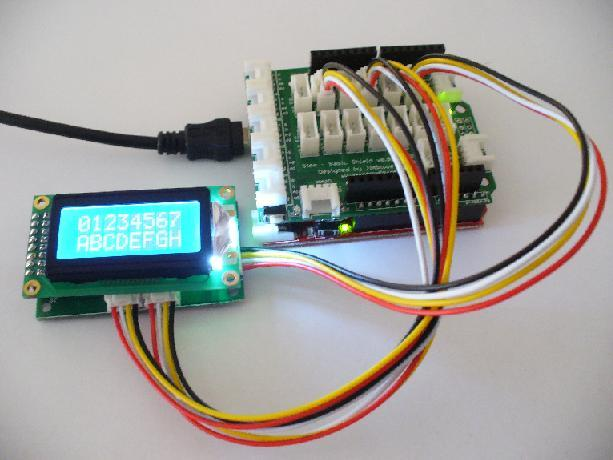

Now it is time to demonstrate the LCD module and matching Grove units. With the LCD you can display data or messages within the two line, eight-character display. For this example, connect the wires from the following LCD sockets to the Grove Base Shield:

Now upload the following Arduino sketch:
// Project Six - LCD demonstration
//
#include <LiquidCrystal.h>
LiquidCrystal lcd(1,2,3,4,5,6);
void setup()
{
lcd.begin(8,2);
}
void loop()
{
lcd.clear();
lcd.setCursor(0,0);
lcd.print("01234567");
lcd.setCursor(0,1);
lcd.print("ABCDEFGH");
delay(65000);
}
The lcd.clear() functions blanks the LCD screen; lcd.setCursor() moves the cursor to (column, row); and lcd.print(“”); writes text to the cursor position on the LCD.
Copyright (c) 2008-2016 Seeed Development Limited (www.seeedstudio.com / www.seeed.cc)